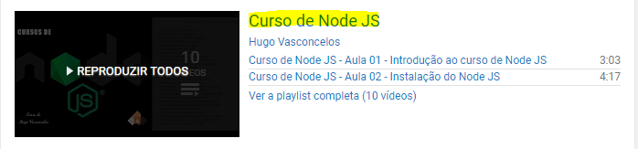
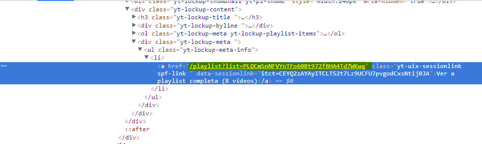
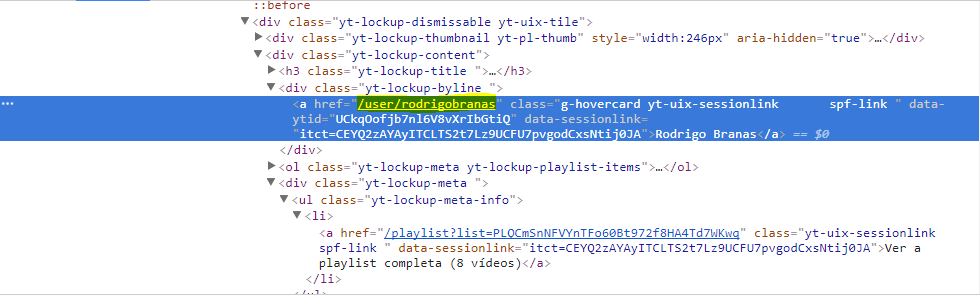
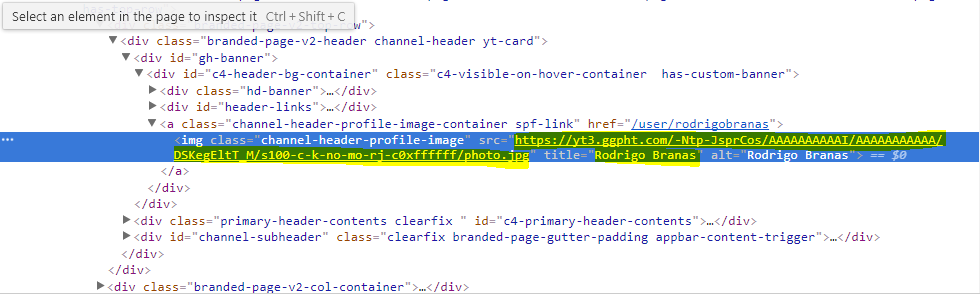

Usando BeatifulSoup no meu dia-a-dia
Um pouco de como ando utilizando o BeatifulSoup no meu dia-a-dia!
Um pouco de como ando utilizando o BeatifulSoup no meu dia-a-dia!
Fala jovens, tudo em ordem? Hoje vou mostrar para vocês como raspagem de dados usando Python anda me ajudando com algumas tarefas, principalmente com as que incluem coleta de informação para usar em outros locais.
Como assim raspagem? Simples, vamos supor que você acessa um determinado site todos os dias, somente para ver/ler alguma informação desse site, para depois usar essa informação em qualquer outra coisa. Agora imagina automatizar isso, tudo pelo terminal, sem precisar passar por propagandas entre outras coisas. Existe diversas maneiras em que você pode usar raspagem para te ajudar, e eu vou explicar como vem me ajudando.
Bom, tudo começou com uma conversa entre amigos, onde foi questionado como seria útil ter os canais de vídeo aulas do Youtube centralizado em um único local, sem precisar passar por resultados inúteis.
Foi aí então que eu pensei em fazer uma raspagem no Youtube, para coletar canais com vídeo aulas de cursos específicos e centralizar esses resultados em uma única página. Mas agora imagine a frustação que seria copiar cada um desses canais e colar um por um em uma página, para fazer ela o seu banco de dados, cansativo né?
Agora chega de história e vamos para a ação, antes de começar dá uma olhada no resultado final Cortexiphan. Agora já visto como ficaria, vamos dar uma olhada no nosso script e entender como tudo funciona e background.
Primeiro foi necessário centralizar todos os tipos de cursos que eu gostaria de ter nessa página em uma variável, ficando assim.
categorias = ["NodeJS", "AngularJS", "PHP", "Zend Framework", "MBA", "Docker", "Zabbix", "CakePHP", "Linux", "LPI", "MongoDB", "React", "Redux", "Silex", "Slim", "Laravel", "Django", "Inglês", "Python", "Marketing", "Vagrant", "Jenkins", "Machine Learning", "Symfony", "Amazon AWS", "Ruby", "Ruby on Rails", "Elixir", "Clojure", "Git", "PHPunit", "Composer", "Bower", "Java", ".NET", "C#", "C++", "MySQL", "SQL", "SQLServer", "Redis", "PostgreSQL", "BeMean", "Be MEAN", "Azure", "Big Date", "Cloud", "Excel", "Photoshop", "Perl", "Packet Tracer", "Powershell", "Active Directory", "Windows Server 2012", "Windows Server 2016", "Redes", "Pentest", "Segurança da informação", "sqlmap", "nmap", "kali linux", "Google dorcks", "Inglês", "Análise Forense Computacional", "Nmap", "Shodan", "Vuln Scan", "Brute Force", "Metasploit", "pfsense", "esxi", "hyper-v", "Samba 4"]Como você pode ver a nossa busca no Youtube vai ser baseada em palavras chaves. Feito isso, vamos filtrar palavra por palavra para que não venha tudo só de uma única vez.
for termos in categorias:
buscanoyoutube("Curso de " + termos, termos)Uma vez filtradas as palavras chaves, precisamos aplicar ela na URL para que nos traga o resultado de que precisamos.
def buscanoyoutube(result_term, categoria):
dt = list()
query = urllib.parse.quote(result_term)
url = "https://www.youtube.com/results?q=" + query
response = urlopen(url)
html = response.read()
soup = BeautifulSoup(html, "html.parser")Aqui eu estou transformando a palavra chave e um url, depois armazenando ela na variável “query”, para só depois ser adicionada junto a URL do youtube. Analisando mais de perto, o resultado da URL para o browser ficaria assim. https://www.youtube.com/results?q=Curso%20de%20NodeJS Com a nossa URL pronta, o soup irá para esse URL, e então precisamos filtrar agora o que exatamente queremos dessa página.
for row in soup.find("div",{"class":"yt-lockup-content"}).find_all("a",{"class":"yt-uix-tile-link"}):
titulo = row["title"] #TITULO DO VIDEO
contador = 0Nesse trecho o que estou pegando é isso:

Com o titulo do nosso curso em mãos, agora vamos precisar pegar a URL da Playlist, para que possamos deixar tudo organizado.
for row in soup.find("ul",{"class":"yt-lockup-meta-info"}).find_all("a",{"class":"yt-uix-sessionlink"}):
url = ('https://youtube.com' + row["href"])
respostaplaylist = urlopen(url)
canal = respostaplaylist.read()
playlis = BeautifulSoup(canal, "html.parser")Ficando mais ou menos assim https://youtube.com/playlist?list=PLQCmSnNFVYnTD5p2fR4EXmtlR6jQJMbPb. Com isso o nosso script vai pegar a seguinte informação, a URL da playlist.

Agora, para poder centralizar mais informações vamos pegar a URL do canal, que o resultado ficaria assim https://youtube.com/user/rodrigobranas.
for row in playlis.find("ul", {'class' : 'pl-header-details'}).find_all("a",{"class":"g-hovercard"}):
canalurl = ('https://youtube.com' + row['href'])
respostacanal = urlopen(canalurl)
entranocanal = respostacanal.read()
resultadocanal = BeautifulSoup(entranocanal, "html.parser")O nosso script vai pegar a seguinte informação:

Com o URL precisamos pegar também o nome do canal, que o resultado seria Rodrigo Branas e também o url da imagem do pefil que está no canal https://yt3.ggpht.com/-Ntp-JsprCos/AAAAAAAAAAI/AAAAAAAAAAA/DSKegEltT_M/s100-c-k-no-mo-rj-c0xffffff/photo.jpg.
for row in resultadocanal.findAll("img", {'class' : 'channel-header-profile-image'}):
nomedocanal = (row['title'])
for row in resultadocanal.findAll("img",{"class":"channel-header-profile-image"}):
urlimg = row["src"] #PEGA O URL DA IMAGEMNa página, o que estamos pegando é:

Com todas as informações coletadas, vamos enviar tudo isso par aum aqruivo json, para ser interpretado no HTML com JavaScript, o nosso arquivo Json, deve ficar assim:
{
'name' : 'Tudo sobre AngularJS',
'urlplay' : 'https://youtube.com/playlist?list=PLQCmSnNFVYnTD5p2fR4EXmtlR6jQJMbPb',
'nomecanal' : 'Rodrigo Branas',
'urlcanal' : 'https://youtube.com/user/rodrigobranas',
'img' : 'https://yt3.ggpht.com/-Ntp-JsprCos/AAAAAAAAAAI/AAAAAAAAAAA/DSKegEltT_M/s100-c-k-no-mo-rj-c0xffffff/photo.jpg'
}E por fim com tudo pronto, vamos só interpretar em uma página HTML bonita, para que fique facil encontrar nossos cursos.

Você pode fazer um clone do script aqui https://github.com/andreyglauzer/cortexiphan
Eu fiz outras coizinhas também, como o Pybook
Que basicamente faz raspagem dos livros mais lidos no Skoob, juntando informações como preço, download do livro em PDF entre outras informações.

flw,vlw. Até à próxima.
{kind=link}
Comentários para: "Usando BeatifulSoup no meu dia-a-dia"